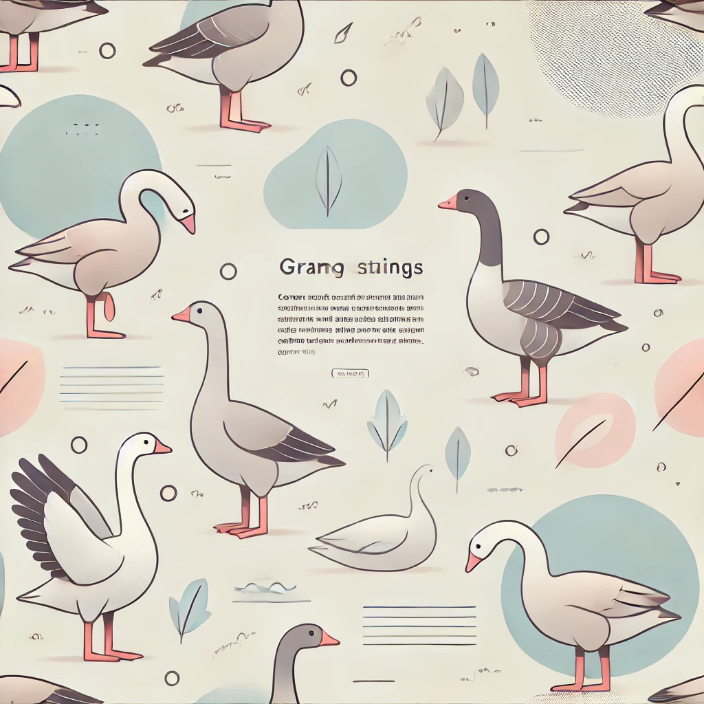

Гуси в культурі
Легенди та казки про гусей
Гуси врятували Стародавній Рим від нападу галлів, попередивши про вторгнення.
Гуси - розумні та соціальні птахи, здатні запам'ятовувати людей і захищати свою територію.

Вони запам'ятовують людей і місця, а також можуть виявляти прихильність або обережність до тих, кого впізнають.
Завдяки гострому зору і гучному гоготу, гуси можуть охороняти територію не гірше за собак.
Гуси врятували Стародавній Рим від нападу галлів, попередивши про вторгнення.
0

Мешкає в Південній Америці, мігрує на тисячі кілометрів. Самці білі з чорними смугами, самиці рудо-коричневі. Віддає перевагу степам, а не водоймам.